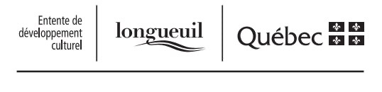
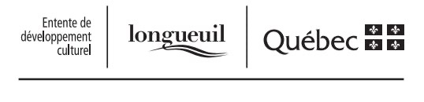

Projet de médiation culturelle « Pour beaucoup d’obscurité, quelques éclats »


2022
Crédit photo : Jean-Michael Seminaro et Éric St-Pierre
Le projet de médiation culturelle Pour beaucoup d’obscurité, quelques éclats a été mené au printemps 2022 par l’artiste multidisciplinaire Myriam Tousignant sur le territoire longueuillois. Ces ateliers s’adressaient aux parents ayant vécu un deuil périnatal. Lors de ces rencontres, les participant·e·s ont été convié·e·s à s’exprimer sur leurs expériences personnelles de cette épreuve par le biais du dessin, de l’écriture et de la poésie visuelle. Voici un survol en images de ce projet novateur.
Ce projet bénéficie par ailleurs d’un soutien financier découlant de l’entente de développement culturel conclue entre la Ville de Longueuil et le gouvernement du Québec. Un remerciement chaleureux à Stéphanie Laquerre, responsable des projets de médiation culturelle au Bureau de la culture et des bibliothèques de Longueuil, pour l’accompagnement, les conseils et la confiance. Ce projet n’aurait pas pu se concrétiser sans cette précieuse collaboration.
Merci à l’équipe du MAM, autour de la maternité pour le partenariat et l’appui dans le cadre de ce projet de médiation culturelle.
 
